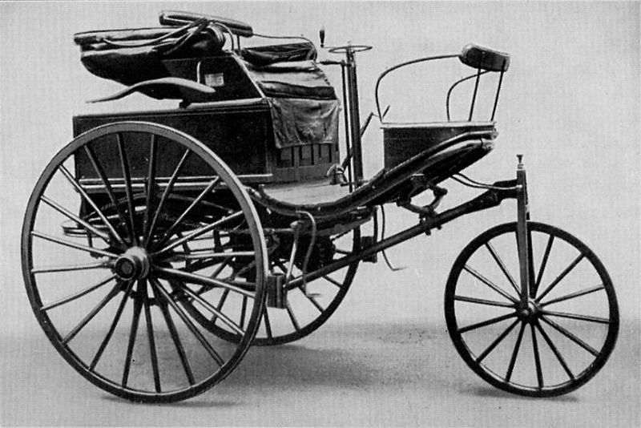

Automobile History
A brief history of the first practical automobile
An automobile, nowadays more commonly known as a car, is a wheeled motor vehicle used for transportation. Most definitions of cars say that they run primarily on roads, seat one to eight people, have four wheels, and mainly transport people rather than goods. However, in the beginning they were somewhat different.
The Benz Patent-Motorwagen (german for "motorcar"), engineered in 1885 by the German Karl Benz, is widely regarded as the world's first practical automobile, a self-propelled vehicle for carrying people, and first car put into series production.
About the Benz Patent-Motorwagen
- Engine: 1.0L (954cc) single cylinder engine 2⁄3horsepower
- Top speed: 16 kph (9.94 mph)
- Curb weight: 120kg (Know more)
A few facts about the Benz Patent-Motorwagen
- It features a water-cooled, 1-cylinder, 4-stroke internal combustion engine, installed horizontally at the rear of the vehicle.
- It runs on ligroin, the world's first liquid automotive fuel.
- 25 Patent-Motorwagen were built between 1886 and 1893.
- Bertha Benz, Karl's wife, took the Patent-Motorwagen No. 3 and drove it on the first long-distance internal combustion automobile road trip, as a publicity stunt to demonstrate its feasibility.
Other noteworthy inventors
| Name | Inventions |
|---|---|
| Nicolas-Joseph Cugnot | The world's first automobile, a steam-fueled vehicle. |
| Étienne Lenoir | The first atmospheric gaseous fueled internal combustion engine and automobile. |
| Wilhelm Maybach | The first motorbike, and the second internal combustion car. |